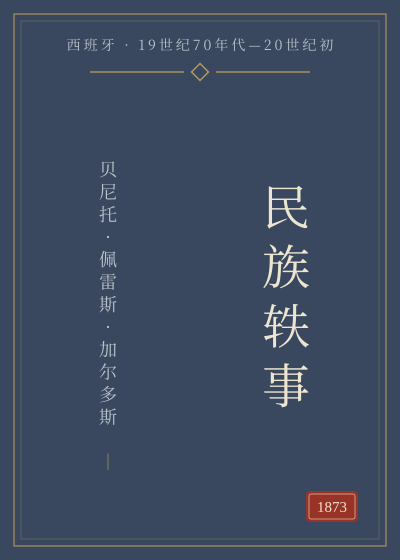
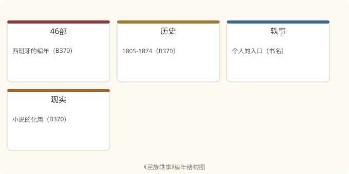

民族轶事
一、基本信息
| 作者 | 贝尼托·佩雷斯·加尔多斯 |
|---|---|
| 成书/出版 | 1873-1912年（Britannica B370：Episodios nacionales——46-novel historical series covering 1805-1874） Benito Perez Galdos — Encyclopaedia Britannica（百科全书） |
| 国别/地区 | 西班牙 |
| 时代 | 近代 · 19世纪70年代—20世纪初 |
| 体裁 | 历史小说系列（46部） |
| 语言 | 西班牙语 |

《民族轶事》编年结构图（主题·结构图）
二、创作背景
Britannica（B370）：'innovatively recreated Spain's 19th-century history'——46部系列覆盖1805-1874。
Britannica（B370）：加尔多斯——'the greatest Spanish novelist since Cervantes'。
题材（通说待核）：从特拉法尔加到王政复现——西班牙19世纪的编年。
三、内容脉络
（通说待核）五个系列的分期（通说待核）。
（通说待核）'萨尔瓦多·蒙萨尔维'等贯穿人物。
四、主要人物表
| 人物 | 身份 | 说明 |
|---|---|---|
| 蒙萨尔维 | 贯穿人物 | （通说待核） |
五、主题与艺术特点
- '民族轶事'：历史的小说化（B370）。
- 西班牙19世纪的编年（B370：1805-1874）。
- 巴尔扎克式的人物复现（B370 对照）。
六、影响与评论
- Britannica：46-novel series（B370）。
Benito Perez Galdos — Encyclopaedia Britannica（百科全书） - Britannica：'recreated Spain's 19th-century history'（B370）。
Benito Perez Galdos — Encyclopaedia Britannica（百科全书）
七、阅读建议
难点
- 46部的体量。
- 西班牙编年史（通说待核）。
- 《民族轶事》中译名（《国民轶事》）待核。
- 西班牙文原版（公有领域）。
加尔多斯历史篇；选读首尾各两部。
八、待核实
- 46部书单核对（通说）。
- '贯穿人物'说待核。
- 1873年首部（La batalla de los Arapiles说）待核。